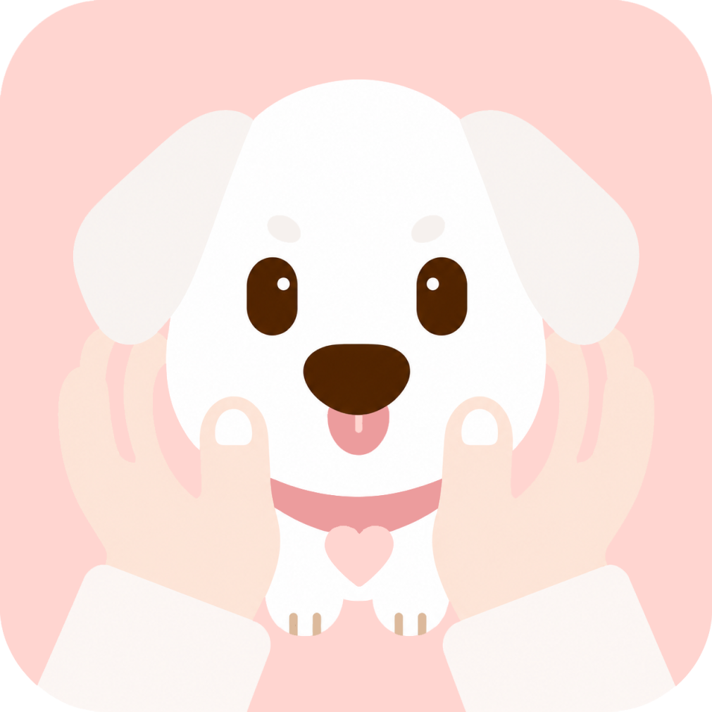

01 / Devices
Have you purchased any technological devices for your pet(s)?
Most surveyed owners purchase technological devices for their pets.
Pets are more than companions. They are family members. EverPaw explores how technology can enrich the lives of pets while supporting the emotional needs of owners, creating continuous companionship from everyday care and engagement to remembrance after loss.
01 / Context
The U.S. pet market has shown consistent rapid growth over the past years. Pets are increasingly integrated into people’s daily lives, with owners spending more on food, healthcare, supplies, and services.
$157 BillionSales projected in the 2025 U.S. pet market
$67.8 B
$34.3 B
$41.4 B
$13.5 B
The original research board’s 2025 projections are retained here.
I explored owners’ concerns in the pet market and found that pet loss is a significant emotional issue for many owners. This revealed an opportunity to design for lifelong companionship and post-loss remembrance.
Pets increasingly fulfill emotional, psychological, and social roles in people’s daily lives.
62% of U.S. adults own pets.
35% of U.S. adults own more than one pet.
97% of U.S. pet owners say their pets are part of their family.
51% consider pets as much a part of the family as a human member.
A UK study of 975 adults found that pet loss can cause grief reactions comparable to human bereavement.
02 / User Research
I posted a questionnaire about pet-related devices, pet ownership habits, and experiences with pet loss.
01 / Devices
02 / Watching TV
I initially considered a product themed around colour-adjustable TVs for pets. Most pets showed little interest in watching TV.
I decided to turn this concept into a minor interactive feature.03 / Feature Preferences
1 = least appealing · 5 = most appealing
4.4 / 5
04 / Pet Loss
Respondents · n = 55
Over 65% of respondents had experienced pet loss.
This suggests an opportunity to explore pet remembrance solutions.
Pet-bereaved respondents · n = 36
Most respondents who had experienced pet loss reported feeling very or extremely sad.
This highlights the emotional impact of pet loss and a need for support and remembrance.
Pet-bereaved respondents · n = 36
Over half of these respondents wanted to continue feeling the presence of their pet.
Among the 36 pet-bereaved respondents, 20 selected a positive answer.
03 / Conversations
Participant 01
I worry that my dog could get hurt when nobody is around.
I keep a memorial portrait of my passed dog. His ashes were returned home and placed in the cage.
Participant 02
I think what old pets want most is for their family to stay with them.
When my cat is scared, human interaction works better than anything else.
Participant 03
My parents buried our dog in the yard near favorite apple tree.
As pets get older, they need someone watching over them.
Design Insight
Owners want both practical care and lasting emotional connection throughout their pet’s life.
04 / Users
Emily represents the pet owners who are the primary users. Riley represents the pets who are the secondary users.
Primary user · Pet owner
Emily is a 28-year-old working professional living alone in an urban apartment with her dog. On weekdays, her dog is often home alone for long stretches, and Emily feels guilty when she can’t be there. She is not a “hardcore pet-tech” user, but she is willing to buy practical devices that make daily care easier and help her dog feel less lonely.
Secondary user · Pet
Riley is an indoor Border Collie living in a city apartment with a single owner. She has a strong attachment to Emily and relies on consistent routines for a sense of security. During weekdays, she spends 8–10 hours per day alone at home, alternating between resting, exploring the environment, and waiting for her owner to return. She enjoys familiar sounds, gentle stimulation, and predictable interactions.
05 / Journey
Emily’s experience from getting a pet and choosing technology to loss and long-term emotional connection.
| Stages | 01Getting Pet | 02Getting Device | 03First-Time User | 04Daily Usage | 05Pet Aging | 06Loss | 07Long-Term Bonding |
|---|---|---|---|---|---|---|---|
| Thoughts | “I hope I can get along well with my pet! I am excited to meet my pet!” | “What devices are on the market? What do I need from the device?” | “Will my pet accept this device? What information can I get, and how do I keep on track?” | “My pet is happier. I feel reassured when I’m away. It’s interesting to see my pet’s preferences!” | “My pet is slowing down. I want my pet to feel comfortable. I don’t want to lose them. Every moment feels precious.” | “My home feels empty. I miss my pet’s presence.” | “I still feel connected to my pet. Seeing them again is comforting. They remain part of my life.” |
| Actions |
|
|
|
|
|
|
|
| Feeling | |||||||
| Pain Points |
|
|
|
|
|
|
|
| Opportunities |
|
|
|
|
|
|
|
06 / Journey
Riley’s experience from entering a new home to later-life dependence, with opportunities to build comfort and continuity.
| Stages | 01Entering New Home | 02Bonding with Owner | 03Getting Used to the Device | 04Engaging with Device | 05Settled Routine | 06Aging | 07Late Stage Dependence |
|---|---|---|---|---|---|---|---|
| Thoughts | “I must stay alert in this unfamiliar environment.” | “My owner provides food and comfort. I am getting familiar with my owner and the routine.” | “There is something new. I feel strange.” | “There are many new and interesting things to look at and listen to. I feel excited and stimulated.” | “I know this place well. I expect things to happen at certain times.” | “I get tired more easily. I prefer quiet and familiar places.” | “I feel weak. I want to stay somewhere safe.” |
| Actions |
|
|
|
|
|
|
|
| Feeling | |||||||
| Pain Points |
|
|
|
|
|
|
|
| Opportunities |
|
|
|
|
|
|
|
07 / Synthesis
I brainstormed potential features for a pet app using sticky notes and organized them into eight categories. Research and questionnaire findings helped me highlight the most important opportunities. These prioritized features informed the direction of my further design.
30 ideas shown
Alert system when unusual behavior happens
Camera that records pets’ behaviors
Emergency service when the system detects something alarming
AI camera that recognizes whether the owner is at home
Injury detection system
Health alerts for aging symptoms
Audio/video chat that can be enjoyed by the pet
AI-generated avatar that accompanies the pet when the owner is away
Record the pet’s voice and play it back in a way they can understand
AI owner-voice interaction that comforts pets when they are scared
Translator between pet and owner
A device that mimics the owner’s patting behavior
Daily behavior summary for owners
Visualization of the pet’s emotional and physical status
AI assessment of the pet’s mental excitement level
Data analysis and AI insights to help owners understand and care for their pets
Pet knowledge base for owners
Crowdsourced pet behavior study
Control the amount of stimulation
Reward mechanism to help pets adapt to the device
Bonding games customized to the pet’s and owner’s preferences
AI-generated memory album
AI avatar that studies and mimics the pet’s behavior
A plush doll or digital avatar that resembles the pet
Pets can talk to each other and make friends online
Share pet stories with other pet owners
Pricing based on the range of functions, with lower-cost options
Let owners choose whether to see their pet after loss
AI-controlled color adjustment that suits pets’ preferences
Simple equipment with an instructional manual
08 / Competitive landscape
I conducted a competitor analysis to understand the market landscape, examining Furbo, FitBark, PetSnap, DogTV, Pawp, and Cuddle Clones.
| Features | Furbo Camera | FitBark 2 | PetSnap | DogTV | Pawp | Cuddle Clones | EverPawOur product |
|---|---|---|---|---|---|---|---|
| Live Monitoring | Included | Not included | Not included | Not included | Not included | Not included | Included |
| Smart Alerts | Included | Included | Not included | Not included | Included | Not included | Included |
| Behavior Analytics | Included | Included | Not included | Not included | Included | Not included | Included |
| Memory Album | Not included | Not included | Included | Not included | Not included | Not included | Included |
| Enrichment | Not included | Not included | Not included | Included | Not included | Not included | Included |
| Post-Loss Remembrance | Not included | Not included | Not included | Not included | Not included | Included | Included |
Key competitor
Furbo emerged as one of the most comprehensive competitors in my review, offering live monitoring, smart alerts, behavior tracking, and remote interaction features.
Design opportunity
My comparison highlighted a gap in digital after-life companionship and a continued sense of presence after a pet’s death. This aligned with both my literature review and questionnaire findings.
09 / Structure
10 / Low-fidelity design
11 / Evaluation & iteration
I showed my user journey map and wireframes to two participants. I asked a series of questions to identify parts of the design that were unclear or in need of improvement.
Iteration 01
Interview questionAre there any features you think should be included but are currently missing?
“Recent activity previews are more important than setting features. I would prefer to see those as I open the app.”
Iteration 02
“I think the transition feels too sudden. Seeing a message that my pet hasn’t been detected for a long time could be emotionally difficult.”
12 / Visual direction
13 / Interface exploration
14 / Brand identity

My logo represents the connection between pets and their owners. A dog sits at the center because dogs are one of the most common companion animals.
Two hands gently surround the dog, symbolizing companionship and care. Using hands instead of a human figure keeps the focus on the pet while still representing the owner’s presence.
15 / High-fidelity design
Everyday care and lasting remembrance, connected through one experience.
The Home page is the primary entry point. A live monitor shows the pet’s current status, with quick access to voice playback, Dog TV, and treats. Recent warnings, activity logs, and daily highlights help owners stay connected while away.
Owners can personalize familiar voice messages in Voice Studio and explore display colors in Color Room.
Cats and dogs exhibit dichromatic vision. Dogs primarily distinguish blue and yellow tones, while cats rely more on blue–green wavelengths and are less sensitive to color overall.
Switch between multiple pet profiles within a single account. Emergency and warning alerts remain active for all pets.
High-priority alerts draw attention to unusual conditions. Notifications are delivered directly to the owner’s phone, helping them stay informed while working away from home.
Behavioral data becomes easy-to-understand visualizations. Emotional trends, barking frequency, activity, sleep, and food interest reveal daily habits and potential changes over time.
From collecting daily moments to keeping a familiar presence.
A gentle mode selection creates a transition between everyday memories and continued emotional connection after pet loss. Owners can always switch between the two modes.
Continue collecting and organizing memories throughout the pet’s lifetime.
Preserve emotional connections after a pet has passed away. Owners can interact with a digital avatar on their mobile device or activate a 3D avatar projection at home. Data collected throughout the pet’s lifetime recreates familiar appearances and behaviors for a personalized remembrance experience.
16 / Product experience
The journey follows pets and owners from adoption to daily care, aging, and remembrance. Their needs change over time; EverPaw connects these moments through familiar tools and continued companionship.
Play the journey to follow each moment, or choose a numbered stage to explore at your own pace.
17 / A life together
Emily and Riley’s story brings the experience together: building trust, staying connected during the day, receiving support, and keeping meaningful memories.
18 / Next possibilities
01 / A more personal interface
Different pets have unique appearances and color patterns. In future versions, owners could customize the app interface based on their pet’s colors.
The system could automatically generate a color palette from a pet photo or allow manual adjustments. This would create a more personalized experience and strengthen the emotional connection between the owner and the product.
For a black and white dog like Riley, the app can use a matching black and white theme.
02 / Companionship beyond the screen
Beyond digital interactions, owners could order a customized physical avatar of their pet. Using photos, videos, and appearance data collected through the system, a personalized figurine or companion object could be created and delivered to the owner.
This would provide a tangible way to preserve memories and extend companionship beyond the digital experience.